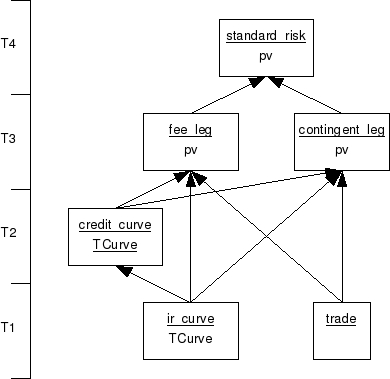

| Download version | |
| Download licence | |
| Trad4 version | |
| Author | |
| Date |
This is a trad4 port of the ISDA CDS Standard Model from JP Morgan. The original code is available here: http://www.cdsmodel.com/

static
TDate baseDate
int mmDCC
long fixedSwapFreq
long floatSwapFreq
long fixedSwapDCC
long floatSwapDCC
char badDayConv
int iholidays
char types[NUM_RATES]
double rates[NUM_RATES]
TDate dates[NUM_RATES]
pub
TCurve pTCurve
sub
ir_curve s_ir_curve
static
TDate today
TDate startDate
TDate stepinDate
TDate cashSettleDate
long nbDate
double recoveryRate
TBoolean payAccOnDefault
long paymentDcc
char badDayConv
int icalendar
TDate endDates[NUM_RATES]
double couponRates[NUM_RATES]
TDateInterval couponInterval[ONE]
TStubMethod stubType[ONE]
pub
TCurve pTCurve
static
TDate startDate
TDate endDate
double notional
double couponRate
TBoolean protectStart
TBoolean isPriceClean
double recoveryRate
sub
ir_curve s_ir_curve
credit_curve s_credit_curve
trade s_trade
pub
double pv
implements leg
implements leg
sub
contingent_leg s_contingent_leg
fee_leg s_fee_leg
pub
double pv